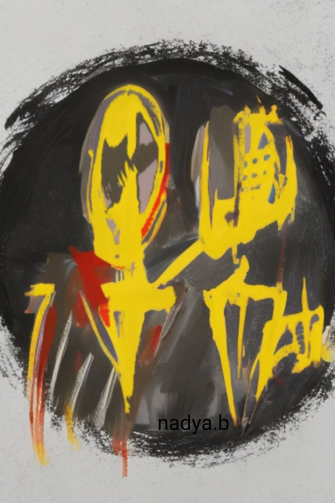

À Nadya Benamar
Je te réponds,
poète,
non pour expliquer,
mais pour rester debout dans ta parole.
Tu dis vrai :
le poème marche seul,
souvent sans témoin.
Je te réponds depuis ce lieu fragile
où le poème naît sans promesse.
Je te crois,
car j’ai marché le même chemin.
il y a trop de cœur
et pas assez de mots.
Oui,
il y a trop de cœur,
et c’est cela même qui déborde.
Les mots ne sont que des digues fragiles
dressées contre l’invisible.
Le poème naît d’un excès,
d’un désordre intérieur
que nul langage ne peut réparer.
Alors nous écrivons
comme on saigne lentement,
sans attendre d’applaudissements.
Oui,
le poème est trop plein,
et le langage trop étroit.
Il faut accepter la perte,
le silence entre les syllabes,
l’incompréhension possible.
Alors nous trichons,
nous étirons les images,
nous espérons
que l’écho fera le travail
à notre place.
Dans chaque poème,
il y a un excès de vie
et une pénurie de langage.
Alors nous mêlons les mots,
non pour expliquer,
mais pour survivre
à ce qu’ils contiennent.
Nous écrivons sans garantie,
avec la foi maladroite
de ceux qui lancent une bouteille
dans la nuit du monde.
Les lecteurs sont rares,
les silences nombreux,
mais le poète persiste,
non par orgueil,
mais par nécessité.
Être poète,
ce n’est pas être compris,
c’est être fidèle au tremblement intérieur.
Nous écrivons sans garantie de regard,
avec pour seule certitude que le cœur,
lui,
n’a pas su se taire.
Dans la tête du poète,
l’idée résiste,
se cabre,
refuse d’être domptée.
Elle éclate parfois en un vers clair,
comme un pardon soudain.
Dans la tête du poète,
l’orage ne demande pas la permission.
Il gronde sous le silence,
puis éclate —
non pour convaincre,
mais pour respirer.
Qu’importe si personne ne lit.
Le poème,
avant d’être reçu,
doit d’abord respirer.
Et survivre en toi
était déjà sa victoire.
Car ta vérité déposée,
même ignorée,
a déjà modifié le monde —
au moins le tien.
Tes convictions offertes
ne demandent pas d’écho :
elles sont semence.
Un jour,
peut-être,
un cœur inconnu saura les reconnaître.
Si personne ne lit,
le poème aura pourtant servi :
il aura tenu debout celui qui l’a écrit.
Écrire,
ce n’est pas être compris,
c’est consentir à l’offrande.
Même ignoré,
le poème sait qu’il a été nécessaire.
Être poète,
c’est accepter l’invisible lecteur,
celui qui ne viendra peut-être jamais,
et pourtant lui parler
avec une fidélité absolue.
Va,
poème,
tu n’es pas vain.
Je te lis,
et je reconnais ce battement
qui précède le mot.
Même non lu,
tu circules,
tu laisses une trace
dans l’air du temps.
Les mots savent
trouver leurs absents.
Va,
poème fragile,
même seul.
Tu portes assez de vérité
pour justifier ta naissance.
Et cela,
aucun oubli ne pourra l’effacer.
Djamel Metref
At Yenni le 22 décembre 2025

← Tous les poèmes